Hola, soy Fede 👋
Tengo 24 años y vivo en Caseros, Buenos Aires. Trabajo como desarrollador hace más de 4 años, me apasiona resolver problemas con tecnología y construir productos útiles.
Un poco más sobre mí
- 🍳 Me gusta la cocina
- 🐶 Pasar tiempo con mi novia y mi mascota
- ✈️ Incursionando en los viajes
- 👾 Jueguitos
Mis momentos favoritos
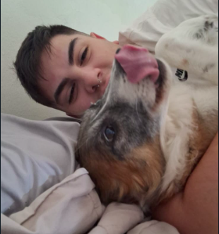
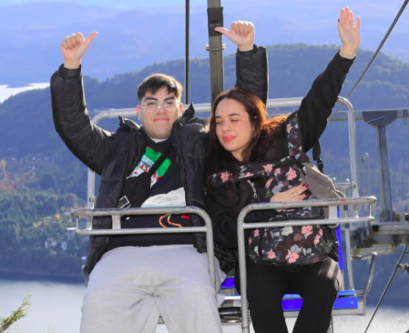
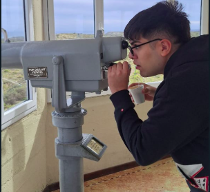
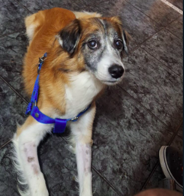
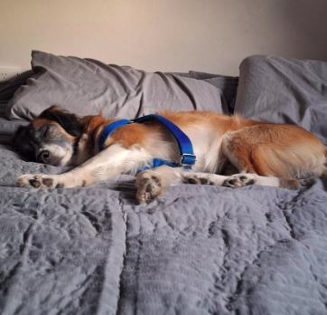
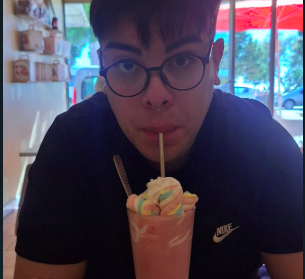
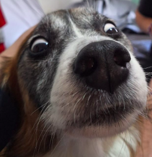
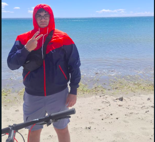
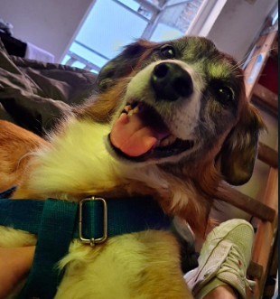
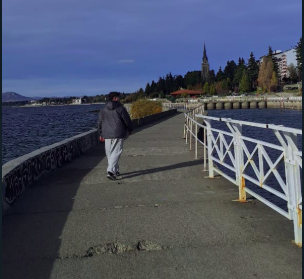
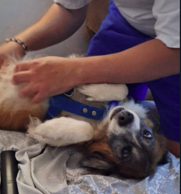
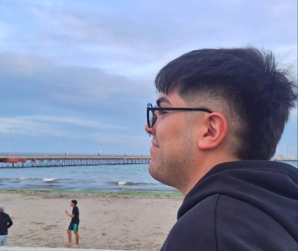